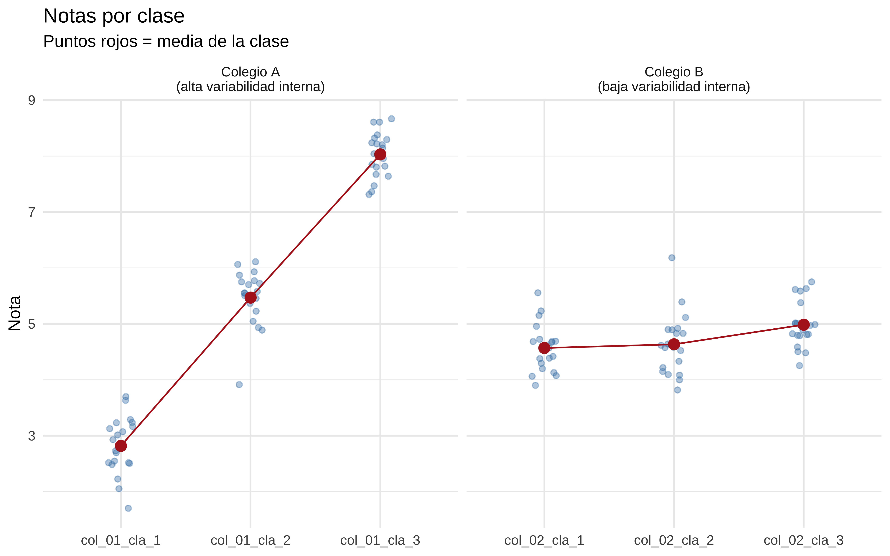
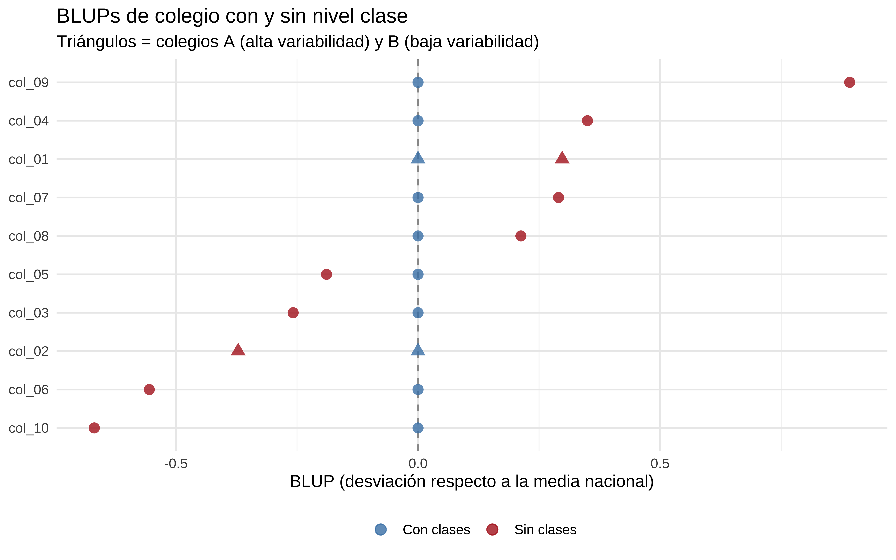

Por qué incluir o ignorar un nivel granular en un modelo mixto cambia las estimaciones de los niveles superiores
Published
June 8, 2026
NoteListening
Tienes un modelo mixto con estructura geográfica: provincias, municipios, barrios. Ajustas el modelo sin incluir los barrios — total, lo que te interesa son los municipios. Y el municipio X te sale con una estimación rarísima, muy extrema, que no cuadra con nada. Metes los barrios. El municipio X se modera. ¿Por qué?
La respuesta tiene que ver con cómo los modelos mixtos reparten la varianza entre niveles. Y la parte que a mí me sorprendió cuando lo entendí: el nivel más fino no es un subordinado del nivel superior — compite con él por explicar la varianza, y eso cambia las estimaciones de arriba.
El ejemplo: colegios y clases
Simulamos notas de alumnos en 10 colegios. Cada colegio tiene 3 clases, y cada clase tiene 20 alumnos. La nota base de cada colegio viene de una distribución normal con media 5 y poca varianza. Pero dentro de cada colegio, las clases tienen su propia desviación.
El truco: el colegio A tiene una clase muy buena y una muy mala — alta variabilidad interna. El colegio B tiene sus tres clases muy parecidas entre sí — baja variabilidad interna. Ambos colegios tienen la misma nota media real: 5.
Mostrar código
library(tidyverse)library(lme4)set.seed(42)n_colegios <-10n_clases <-3n_alumnos <-20# Efecto real de cada colegio (todos cercanos a 0, es decir, media nacional)efecto_colegio <-rnorm(n_colegios, mean =0, sd =0.3)# Colegio A (índice 1): clases muy disparesefecto_clase_A <-c(-2.5, 0, 2.5)# Colegio B (índice 2): clases muy parecidasefecto_clase_B <-c(-0.2, 0, 0.2)# Resto de colegios: variabilidad moderadaefecto_clase_resto <-matrix(rnorm((n_colegios -2) * n_clases, 0, 0.5),nrow = n_colegios -2)datos <-map_dfr(seq_len(n_colegios), function(col) {map_dfr(seq_len(n_clases), function(cla) {if (col ==1) ef_clase <- efecto_clase_A[cla]elseif (col ==2) ef_clase <- efecto_clase_B[cla]else ef_clase <- efecto_clase_resto[col -2, cla]tibble(colegio =paste0("col_", sprintf("%02d", col)),clase =paste0("col_", sprintf("%02d", col), "_cla_", cla),nota =5+ efecto_colegio[col] + ef_clase +rnorm(n_alumnos, 0, 0.5) ) })})
Veamos las notas medias por clase dentro del colegio A y el B:
Mostrar código
datos |>filter(colegio %in%c("col_01", "col_02")) |>mutate(colegio =if_else(colegio =="col_01", "Colegio A\n(alta variabilidad interna)","Colegio B\n(baja variabilidad interna)")) |>ggplot(aes(x = clase, y = nota)) +geom_jitter(width =0.1, alpha =0.4, color ="steelblue") +stat_summary(fun = mean, geom ="point", size =3, color ="firebrick") +stat_summary(fun = mean, geom ="line", aes(group = colegio), color ="firebrick") +facet_wrap(~colegio, scales ="free_x") +labs(x =NULL, y ="Nota", title ="Notas por clase",subtitle ="Puntos rojos = media de la clase") +theme_minimal()

Los dos colegios tienen la misma nota media real (≈ 5), pero el A tiene una dispersión interna enorme entre sus clases.
El modelo sin clases
Ajustamos un modelo mixto con solo el nivel colegio. El modelo ve todas las notas de cada colegio como observaciones del mismo grupo:
bind_rows(blups_sin_clases, blups_con_clases) |>mutate(colegio =fct_reorder(colegio, blup),destacado = colegio %in%c("col_01", "col_02") ) |>ggplot(aes(x = blup, y = colegio, color = modelo, shape = destacado)) +geom_vline(xintercept =0, linetype ="dashed", color ="grey60") +geom_point(size =3, alpha =0.8) +scale_color_manual(values =c("Sin clases"="firebrick", "Con clases"="steelblue")) +scale_shape_manual(values =c("FALSE"=16, "TRUE"=17), guide ="none") +labs(x ="BLUP (desviación respecto a la media nacional)",y =NULL,color =NULL,title ="BLUPs de colegio con y sin nivel clase",subtitle ="Triángulos = colegios A (alta variabilidad) y B (baja variabilidad)" ) +theme_minimal() +theme(legend.position ="bottom")

El colegio A (triángulo) tiene un BLUP muy extremo en el modelo sin clases. Con clases, se contrae hacia cero — que es donde debería estar, porque su nota media real es 5. El colegio B apenas cambia, porque su variabilidad interna era pequeña y no confundía al modelo.
Por qué pasa: los niveles compiten por la varianza
Aquí está la parte que a mí me dejó pensando.
Cuando ajustas un lmer, el algoritmo no estima los efectos aleatorios de arriba abajo (primero colegios, luego clases). Los estima todos a la vez, y cada nivel “compite” por explicar la varianza total de los datos.
La varianza estimada de cada nivel determina cuánto shrinkage sufre ese nivel. La fórmula simplificada del BLUP es:
El factor \(\frac{\sigma^2_{\text{nivel}}}{\sigma^2_{\text{nivel}} + \sigma^2_{\text{residual}} / n_j}\) es el shrinkage: cuanto menor sea \(\sigma^2_{\text{nivel}}\), más se contrae el BLUP hacia cero.
Veamos qué pasa con las varianzas estimadas:
Mostrar código
data.frame(modelo =c("Sin clases", "Con clases"),sigma2_colegio =c(as.data.frame(VarCorr(mod_sin_clases))$vcov[1],as.data.frame(VarCorr(mod_con_clases))$vcov[1] ))#> modelo sigma2_colegio#> 1 Sin clases 0.2512745#> 2 Con clases 0.9352338
Al incluir las clases, la varianza estimada del nivel colegio baja. El modelo descubre que parte de lo que antes contaba como “variación entre colegios” era en realidad “variación entre clases dentro del mismo colegio”. Con \(\sigma^2_{\text{colegio}}\) más pequeña, el factor de shrinkage sube y los BLUPs se contraen más.
Sin clases, el modelo no tiene forma de saber si el colegio A es extremo porque el colegio en sí es especial, o porque tiene clases muy dispares internamente. Lo interpreta todo como señal propia del colegio. Con clases, puede decir: “el colegio es normal, lo que varía son sus clases”.
Y agregar tampoco arregla el problema
Una alternativa obvia sería pre-agregar los datos a nivel colegio antes de ajustar el modelo. Así eliminas la pseudo-replicación (ya no hay varias filas por colegio). Pero tampoco funciona:
Mostrar código
datos_agg <- datos |>group_by(colegio) |>summarise(nota_media =mean(nota), .groups ="drop")# Con un solo nivel no tiene sentido lmer, pero la idea se ve con la varianza muestraldatos_agg |>summarise(varianza_entre_colegios =var(nota_media) )#> # A tibble: 1 × 1#> varianza_entre_colegios#> <dbl>#> 1 0.267
Al agregar, la varianza interna de cada colegio desaparece del dataset. El modelo ve una sola nota media por colegio y trata a todos igual de “creíbles”, sin saber que detrás del 5.0 del colegio A hay clases que van de 2 a 8, y detrás del 5.0 del colegio B hay clases que van de 4.8 a 5.2. El shrinkage sigue siendo insuficiente para el colegio A.
La varianza interna solo puede calibrar bien el shrinkage si está explícitamente en el modelo como un nivel.
Resumen
Situación
Pseudo-replicación
Shrinkage correcto
Un nivel (sin clases)
—
✗
Agregar a colegio
✓
✗
Incluir clases en el modelo
✓
✓
La moraleja: en un modelo jerárquico, los niveles no trabajan en cascada de arriba abajo. Trabajan juntos, repartiéndose la varianza. Si omites un nivel, el superior se lleva su parte — y sus estimaciones quedan infladas.
Source Code
---title: "Los niveles pequeños también mandan"date: '2026-06-08'categories: - estadística - modelos mixtos - R - 2026description: 'Por qué incluir o ignorar un nivel granular en un modelo mixto cambia las estimaciones de los niveles superiores'execute: message: false warning: false echo: true output: trueformat: html: toc: true fig-height: 5 fig-dpi: 300 fig-width: 8 fig-align: center code-fold: show code-link: true code-summary: "Mostrar código" code-tools: trueknitr: opts_chunk: out.width: 80% fig.showtext: TRUE collapse: true comment: "#>"editor: markdown: wrap: sentence---::: callout-note## Listening<iframe style="border-radius:12px" src="https://open.spotify.com/embed/track/4uLU6hMCjMI75M1A2tKUQC?utm_source=generator" width="100%" height="250" frameBorder="0" allowfullscreen="" allow="autoplay; clipboard-write; encrypted-media; fullscreen; picture-in-picture" loading="lazy"></iframe>:::Tienes un modelo mixto con estructura geográfica: provincias, municipios, barrios.Ajustas el modelo sin incluir los barrios — total, lo que te interesa son los municipios.Y el municipio X te sale con una estimación rarísima, muy extrema, que no cuadra con nada.Metes los barrios. El municipio X se modera. ¿Por qué?La respuesta tiene que ver con cómo los modelos mixtos reparten la varianza entre niveles.Y la parte que a mí me sorprendió cuando lo entendí: **el nivel más fino no es un subordinado del nivel superior — compite con él por explicar la varianza, y eso cambia las estimaciones de arriba**.## El ejemplo: colegios y clasesSimulamos notas de alumnos en 10 colegios.Cada colegio tiene 3 clases, y cada clase tiene 20 alumnos.La nota base de cada colegio viene de una distribución normal con media 5 y poca varianza.Pero dentro de cada colegio, las clases tienen su propia desviación.El truco: el **colegio A** tiene una clase muy buena y una muy mala — alta variabilidad interna.El **colegio B** tiene sus tres clases muy parecidas entre sí — baja variabilidad interna.Ambos colegios tienen la misma nota media real: 5.```{r simulacion}library(tidyverse)library(lme4)set.seed(42)n_colegios <-10n_clases <-3n_alumnos <-20# Efecto real de cada colegio (todos cercanos a 0, es decir, media nacional)efecto_colegio <-rnorm(n_colegios, mean =0, sd =0.3)# Colegio A (índice 1): clases muy disparesefecto_clase_A <-c(-2.5, 0, 2.5)# Colegio B (índice 2): clases muy parecidasefecto_clase_B <-c(-0.2, 0, 0.2)# Resto de colegios: variabilidad moderadaefecto_clase_resto <-matrix(rnorm((n_colegios -2) * n_clases, 0, 0.5),nrow = n_colegios -2)datos <-map_dfr(seq_len(n_colegios), function(col) {map_dfr(seq_len(n_clases), function(cla) {if (col ==1) ef_clase <- efecto_clase_A[cla]elseif (col ==2) ef_clase <- efecto_clase_B[cla]else ef_clase <- efecto_clase_resto[col -2, cla]tibble(colegio =paste0("col_", sprintf("%02d", col)),clase =paste0("col_", sprintf("%02d", col), "_cla_", cla),nota =5+ efecto_colegio[col] + ef_clase +rnorm(n_alumnos, 0, 0.5) ) })})```Veamos las notas medias por clase dentro del colegio A y el B:```{r plot-clases}datos |>filter(colegio %in%c("col_01", "col_02")) |>mutate(colegio =if_else(colegio =="col_01", "Colegio A\n(alta variabilidad interna)","Colegio B\n(baja variabilidad interna)")) |>ggplot(aes(x = clase, y = nota)) +geom_jitter(width =0.1, alpha =0.4, color ="steelblue") +stat_summary(fun = mean, geom ="point", size =3, color ="firebrick") +stat_summary(fun = mean, geom ="line", aes(group = colegio), color ="firebrick") +facet_wrap(~colegio, scales ="free_x") +labs(x =NULL, y ="Nota", title ="Notas por clase",subtitle ="Puntos rojos = media de la clase") +theme_minimal()```Los dos colegios tienen la misma nota media real (≈ 5), pero el A tiene una dispersión interna enorme entre sus clases.## El modelo sin clasesAjustamos un modelo mixto con solo el nivel colegio.El modelo ve todas las notas de cada colegio como observaciones del mismo grupo:```{r modelo-sin-clases}mod_sin_clases <-lmer(nota ~1+ (1| colegio), data = datos)blups_sin_clases <-ranef(mod_sin_clases)$colegio |> tibble::rownames_to_column("colegio") |>rename(blup =`(Intercept)`) |>mutate(modelo ="Sin clases")```## El modelo con clasesAñadimos el nivel clase como efecto aleatorio anidado dentro del colegio:```{r modelo-con-clases}mod_con_clases <-lmer(nota ~1+ (1| colegio) + (1| clase), data = datos)blups_con_clases <-ranef(mod_con_clases)$colegio |> tibble::rownames_to_column("colegio") |>rename(blup =`(Intercept)`) |>mutate(modelo ="Con clases")```## Comparación de BLUPs```{r plot-blups}bind_rows(blups_sin_clases, blups_con_clases) |>mutate(colegio =fct_reorder(colegio, blup),destacado = colegio %in%c("col_01", "col_02") ) |>ggplot(aes(x = blup, y = colegio, color = modelo, shape = destacado)) +geom_vline(xintercept =0, linetype ="dashed", color ="grey60") +geom_point(size =3, alpha =0.8) +scale_color_manual(values =c("Sin clases"="firebrick", "Con clases"="steelblue")) +scale_shape_manual(values =c("FALSE"=16, "TRUE"=17), guide ="none") +labs(x ="BLUP (desviación respecto a la media nacional)",y =NULL,color =NULL,title ="BLUPs de colegio con y sin nivel clase",subtitle ="Triángulos = colegios A (alta variabilidad) y B (baja variabilidad)" ) +theme_minimal() +theme(legend.position ="bottom")```El colegio A (triángulo) tiene un BLUP muy extremo en el modelo sin clases.Con clases, se contrae hacia cero — que es donde debería estar, porque su nota media real es 5.El colegio B apenas cambia, porque su variabilidad interna era pequeña y no confundía al modelo.## Por qué pasa: los niveles compiten por la varianzaAquí está la parte que a mí me dejó pensando.Cuando ajustas un `lmer`, el algoritmo no estima los efectos aleatorios de arriba abajo (primero colegios, luego clases).Los estima **todos a la vez**, y cada nivel "compite" por explicar la varianza total de los datos.La varianza estimada de cada nivel determina cuánto shrinkage sufre ese nivel.La fórmula simplificada del BLUP es:$$\hat{u}_j \approx \bar{y}_j \cdot \frac{\sigma^2_{\text{nivel}}}{\sigma^2_{\text{nivel}} + \sigma^2_{\text{residual}} / n_j}$$El factor $\frac{\sigma^2_{\text{nivel}}}{\sigma^2_{\text{nivel}} + \sigma^2_{\text{residual}} / n_j}$ es el shrinkage: cuanto menor sea $\sigma^2_{\text{nivel}}$, más se contrae el BLUP hacia cero.Veamos qué pasa con las varianzas estimadas:```{r varianzas}data.frame(modelo =c("Sin clases", "Con clases"),sigma2_colegio =c(as.data.frame(VarCorr(mod_sin_clases))$vcov[1],as.data.frame(VarCorr(mod_con_clases))$vcov[1] ))```Al incluir las clases, la varianza estimada del nivel colegio **baja**.El modelo descubre que parte de lo que antes contaba como "variación entre colegios" era en realidad "variación entre clases dentro del mismo colegio".Con $\sigma^2_{\text{colegio}}$ más pequeña, el factor de shrinkage sube y los BLUPs se contraen más.Sin clases, el modelo no tiene forma de saber si el colegio A es extremo porque **el colegio en sí es especial**, o porque **tiene clases muy dispares internamente**.Lo interpreta todo como señal propia del colegio.Con clases, puede decir: "el colegio es normal, lo que varía son sus clases".## Y agregar tampoco arregla el problemaUna alternativa obvia sería pre-agregar los datos a nivel colegio antes de ajustar el modelo.Así eliminas la pseudo-replicación (ya no hay varias filas por colegio).Pero tampoco funciona:```{r modelo-agregado}datos_agg <- datos |>group_by(colegio) |>summarise(nota_media =mean(nota), .groups ="drop")# Con un solo nivel no tiene sentido lmer, pero la idea se ve con la varianza muestraldatos_agg |>summarise(varianza_entre_colegios =var(nota_media) )```Al agregar, la varianza interna de cada colegio desaparece del dataset.El modelo ve una sola nota media por colegio y trata a todos igual de "creíbles", sin saber que detrás del 5.0 del colegio A hay clases que van de 2 a 8, y detrás del 5.0 del colegio B hay clases que van de 4.8 a 5.2.El shrinkage sigue siendo insuficiente para el colegio A.La varianza interna solo puede calibrar bien el shrinkage si está **explícitamente en el modelo como un nivel**.## Resumen| Situación | Pseudo-replicación | Shrinkage correcto ||---|---|---|| Un nivel (sin clases) | — | ✗ || Agregar a colegio | ✓ | ✗ || Incluir clases en el modelo | ✓ | ✓ |La moraleja: en un modelo jerárquico, los niveles no trabajan en cascada de arriba abajo.Trabajan juntos, repartiéndose la varianza.Si omites un nivel, el superior se lleva su parte — y sus estimaciones quedan infladas.